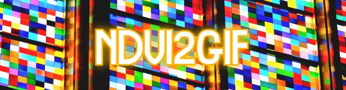
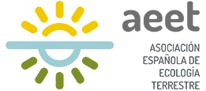
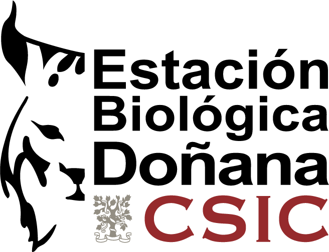
Taller de Ndvi2Gif · II Jornadas de Ecoinformática de la AEET
De una cuenta de Google en blanco a un proyecto registrado que funciona desde Google Colab. Hazlo antes del taller: son quince minutos, y sin esto no se pueden seguir los ejercicios.
Esto hay que hacerlo antes del 2 de octubre. El taller dura una hora y no da para montar cuentas: quien llegue sin el proyecto registrado podrá seguir la explicación, pero no ejecutar nada. Y no basta con crear la cuenta — hay que comprobar que funciona. El último paso de este documento es justamente esa comprobación, y son dos líneas en Colab. Si te da error, tienes margen para resolverlo.
Ndvi2Gif no calcula nada por su cuenta: lo que hace es construir las operaciones y mandárselas a Google Earth Engine, que es quien tiene las imágenes y quien pone la máquina. No hay una cuenta compartida del taller. Cada persona conecta la suya, y cada cálculo se ejecuta con sus credenciales y se descuenta de su cuota.
De ahí salen tres cosas que conviene saber antes de empezar:
Reserva un cuarto de hora la primera vez. Hecho una vez, está hecho: el registro del proyecto no caduca, y la autenticación de Colab solo se repite cuando cambias de entorno o revocas el permiso.
Vale cualquiera, sea una @gmail.com personal o una institucional. Si
tu centro gestiona el correo con Google —como hace el CSIC— usa la institucional: la
elegibilidad para el acceso gratuito no comercial se juzga por la organización que
hay detrás de la cuenta, y una dirección institucional habla por sí sola.
Un aviso, y es el origen de casi toda la confusión posterior: si tienes varias cuentas de Google abiertas en el mismo navegador, cualquiera de los pasos que vienen puede caer en la equivocada sin decírtelo. Antes de empezar, cierra todas menos una o haz el proceso entero en un perfil aparte del navegador.
Earth Engine funciona a través de un proyecto de Google Cloud. El proyecto es un contenedor y un nombre; crearlo no te compromete a nada y en la vía no comercial no se pide ninguna tarjeta.
Entra en console.cloud.google.com/earth-engine. Esta página crea el proyecto y lo registra de una vez, y por eso conviene empezar aquí en lugar de crear el proyecto por un lado y registrarlo por otro.
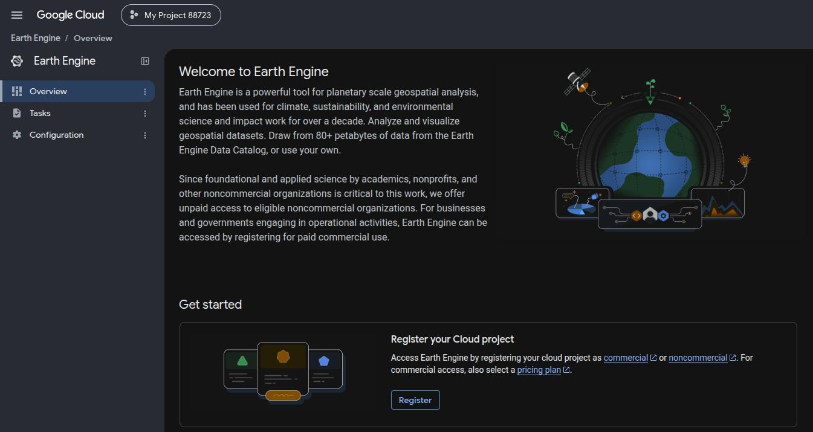
La página de Earth Engine de la consola, en un proyecto que todavía no está registrado. Esto es lo único que ofrece hasta que lo registras.
Si aún no tienes proyecto, créalo. Ponle un nombre que reconozcas dentro de seis
meses —ndvi2gif-tunombre se lee mejor que my-project-84321—
y acepta el identificador que proponga Google.
Después recorre el cuestionario de registro. Es el que decide si el proyecto es comercial o no comercial, y para docencia e investigación la respuesta es no comercial.
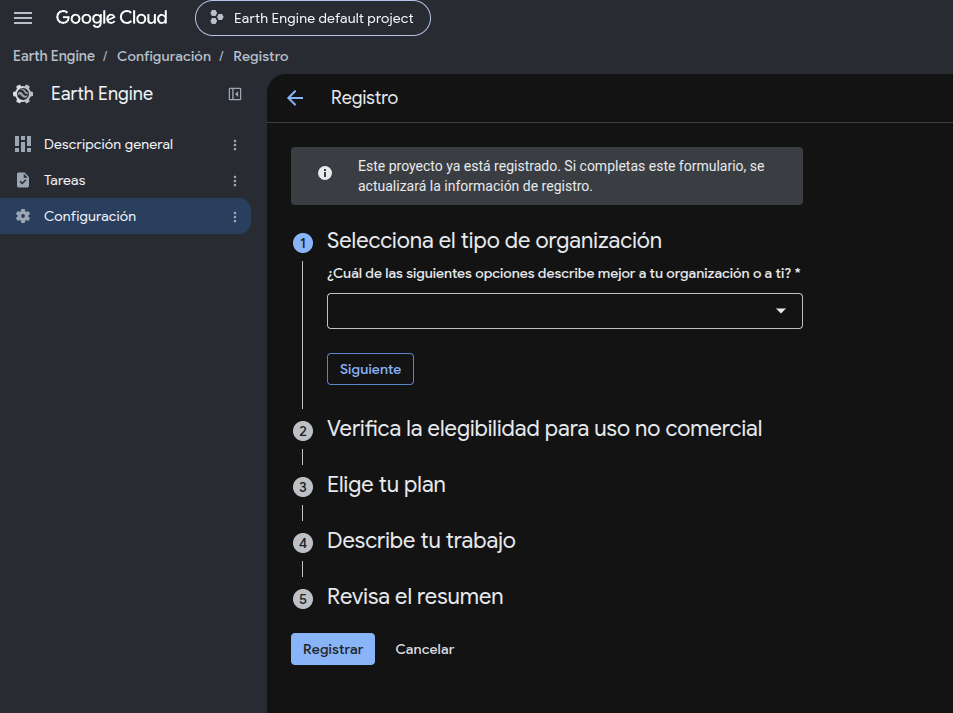
El registro es un formulario de cinco pasos que se abren de uno en uno. El aviso de arriba solo sale en un proyecto que ya estaba registrado, como el de la captura; en un registro nuevo ahí no hay nada.
El segundo paso es el que decide de verdad. Pregunta para quién trabajas, si alguien te paga por lo que construyas con Earth Engine y qué quieres averiguar; un recuadro al pie te dice si las respuestas suman uso no comercial.
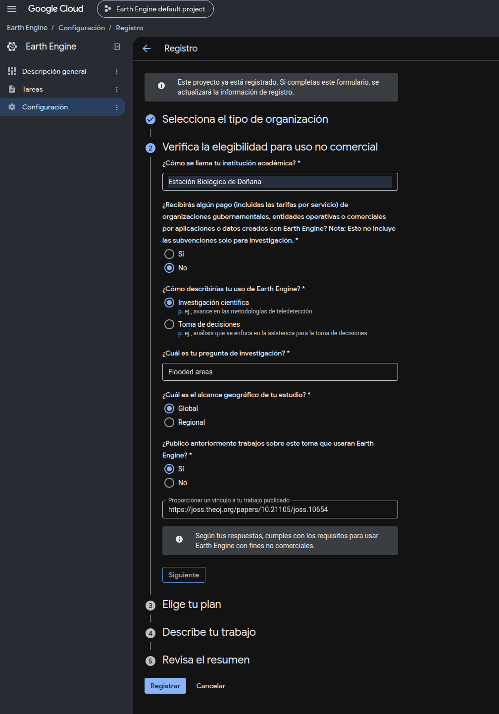
El paso que decide la respuesta. La investigación y la docencia caen del lado no comercial, y el recuadro del final lo confirma en cuanto las respuestas cuadran.
El acceso no comercial cubre investigación y docencia académicas, entidades sin ánimo de lucro, periodismo, formación y organismos públicos que hagan investigación. Lo que no cubre es el trabajo por encargo: producir un entregable que paga un cliente comercial o una administración. Un taller, un artículo o una tesis están holgadamente del lado no comercial de esa línea.
Los pasos que quedan preguntan qué plan quieres y cómo clasificar lo que haces, y el último vuelve a poner todas las respuestas delante antes de enviar nada.
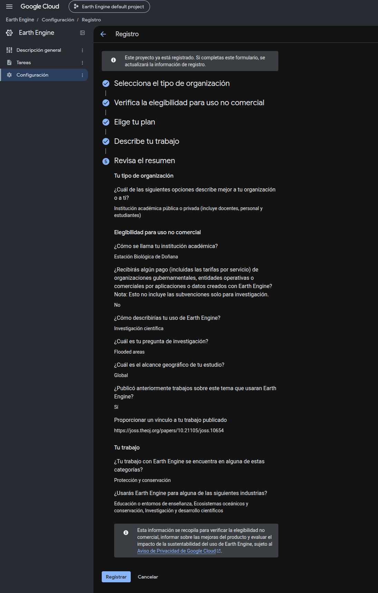
El último paso repite todas las respuestas antes de mandarlas.
Contesta el cuestionario con honestidad, no con conveniencia. Un proyecto mal registrado pierde el acceso; no lo mueven de sitio sin más.
Lo que vas a necesitar en Colab es el ID del proyecto, que no es su nombre. El nombre es el que escribiste tú y puede llevar mayúsculas y espacios; el ID va en minúsculas, con guiones, es único en todo Google Cloud y a menudo lleva dígitos pegados al final para conseguirlo.
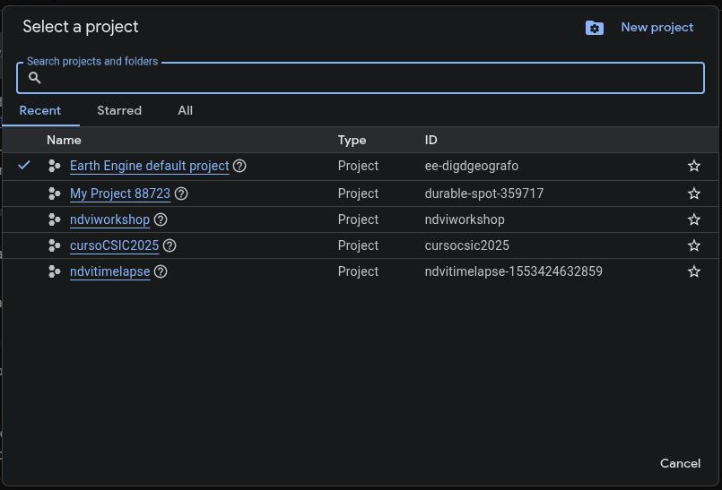
El ID no es el nombre. El selector de proyectos, arriba en cualquier página de la consola, los lista uno al lado del otro.
ee.Initialize().Cópialo y guárdalo, que lo necesitas en el paso 5. Si lo pierdes,
está en la portada de la consola, en el selector de proyectos de cualquier página y
en la URL de casi todas como ?project=….
Registrarse por la página anterior normalmente enciende la API de Earth Engine en el proyecto sin que hagas nada. Aun así merece la pena saber dónde está el interruptor, porque un proyecto con la API apagada da una conexión que parece funcionar y falla en el primer cálculo.
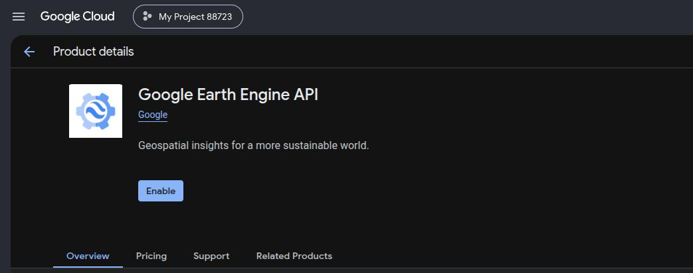
La API de Earth Engine en el proyecto, aquí en uno donde todavía está apagada.
Abre la Earth Engine API en la biblioteca de APIs, comprueba que el proyecto que sale arriba es el bueno y habilítala si el botón lo ofrece.
Desde abril de 2026 cada proyecto no comercial tiene una asignación mensual de unidades de cómputo de Earth Engine, medida en EECU-horas, y está en uno de tres niveles. Los proyectos nuevos empiezan en el primero.
| Nivel | Al mes | Para quién es |
|---|---|---|
| Community | 150 EECU-horas | Donde empieza todo proyecto no comercial. De sobra para el taller y para trabajar sobre áreas de tamaño razonable. |
| Contributor | 1.000 EECU-horas | Sigue siendo gratis, pero el proyecto tiene que llevar una cuenta de facturación asociada — asociada, no cobrada. El nivel sensato para trabajo de verdad. |
| Partner | 100.000 EECU-horas | Por solicitud y revisión manual, para trabajo de alto impacto en clima y biodiversidad. La aprobación tarda semanas. |
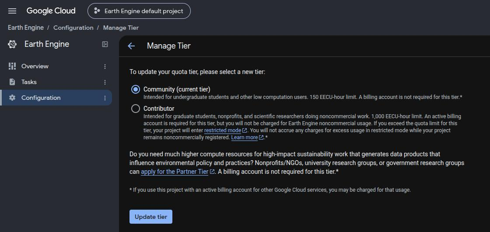
El nivel decide cuánto cómputo tiene el proyecto cada mes. Se llega desde Earth Engine › Configuration › Manage tier.
Quedarse sin cuota no te deja fuera. El proyecto pasa a un modo restringido en el que los cálculos siguen ejecutándose pero con menos paralelismo, así que todo se vuelve simplemente lento. La asignación se reinicia el día 1 de cada mes, a medianoche hora del Pacífico.
Para el taller, Community sobra. No hace falta que toques nada de esto: está aquí para que sepas qué pasa el día que un cálculo grande se arrastre.
Este es el paso que convierte todo lo anterior en algo que funciona, y el que hay que hacer antes de venir. Abre un cuaderno nuevo en Google Colab y ejecuta:
import ee
ee.Authenticate()
ee.Initialize(project='pon-aqui-tu-id-de-proyecto')ee.Authenticate() te da un enlace. Al abrirlo aparece el
autenticador de cuadernos de Earth Engine, que confirma con qué cuenta y sobre qué
proyecto se va a generar el permiso.
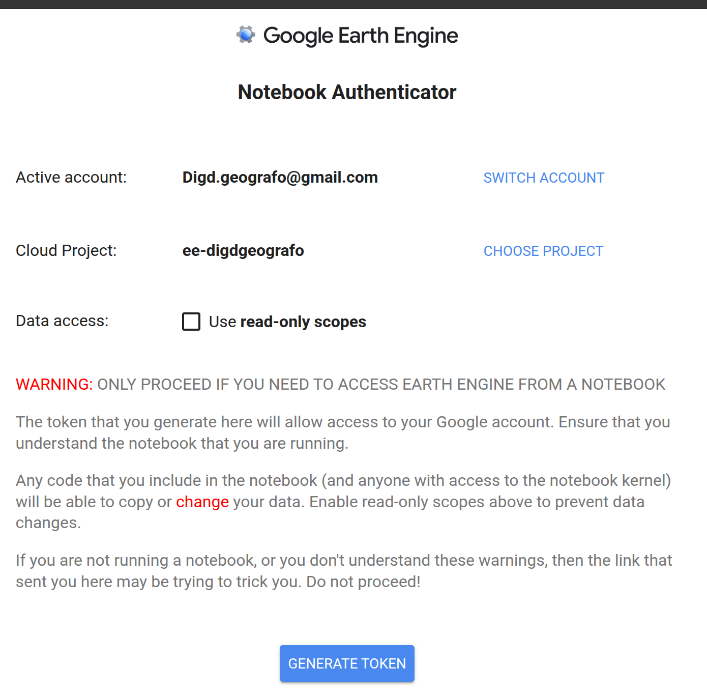
El enlace abre aquí primero. Es una página de Earth Engine y sus avisos en rojo van dirigidos a quien llega desde un cuaderno que no ha escrito; tú llegas desde el tuyo, y el proyecto de abajo es el que acabas de registrar.
Google termina enseñándote un código largo. Cópialo entero y pégalo en el cuadro que Colab ha dejado esperando debajo de la celda.
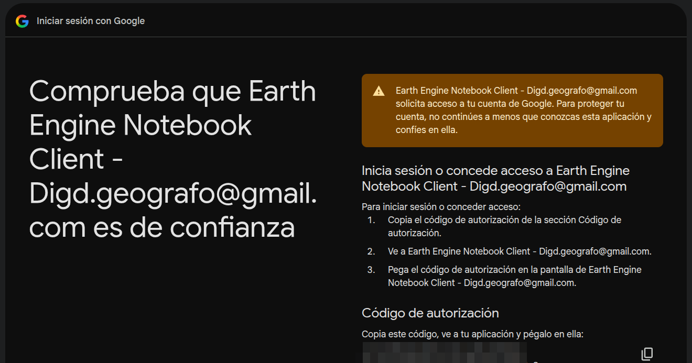
La página de autorización de Google. El código está tapado en esta captura a propósito: es una credencial de verdad, aunque dure poco.
Usa Chrome, Edge o Brave para este paso. El flujo depende de que Google te enseñe un código para copiar, y fuera de navegadores basados en Chromium esa página puede cerrarse sola sin llegar a mostrarlo. Solo afecta a autenticarse; después funciona en cualquier navegador.
Si ee.Initialize() no ha protestado, ya está. Para quedarte
tranquilo, ejecuta esto en la celda siguiente: pide un dato real al servidor, así que
si responde es que la cadena entera funciona.
import ee
print(ee.Image('USGS/SRTMGL1_003').get('system:id').getInfo())
# USGS/SRTMGL1_003Si te imprime esa línea, tienes la cuenta lista y puedes seguir los ejercicios del taller. Si te da un error, míralo ahora — la sección siguiente cubre los que salen casi siempre, y tienes semanas de margen.
Lo que ejecutes en Colab no cuesta nada de tu cuota de Colab ni de tu máquina: el cálculo ocurre en los servidores de Earth Engine. Lo que se descuenta es la cuota del paso 4.
ee.Authenticate() y coge uno nuevo: son de
un solo uso por diseño.ee.Initialize(), o se ejecutó sin
project=. Earth Engine exige nombrar el proyecto: sin él no sabe a
qué cuota cargar el trabajo.project= es el ID y no el nombre visible: es el error más común
de todos y no se parece en nada a lo que aparenta.ee.Authenticate(). Es el motivo por el
que conviene tenerla como primera celda del cuaderno.